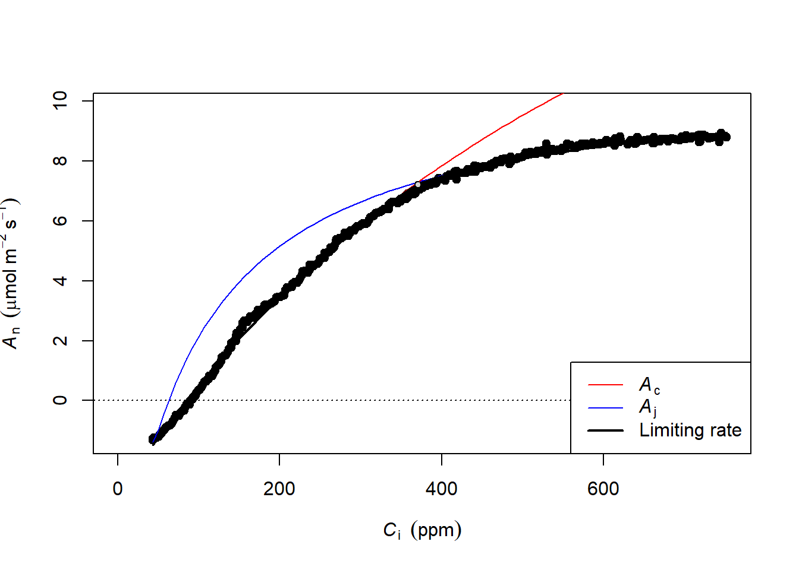
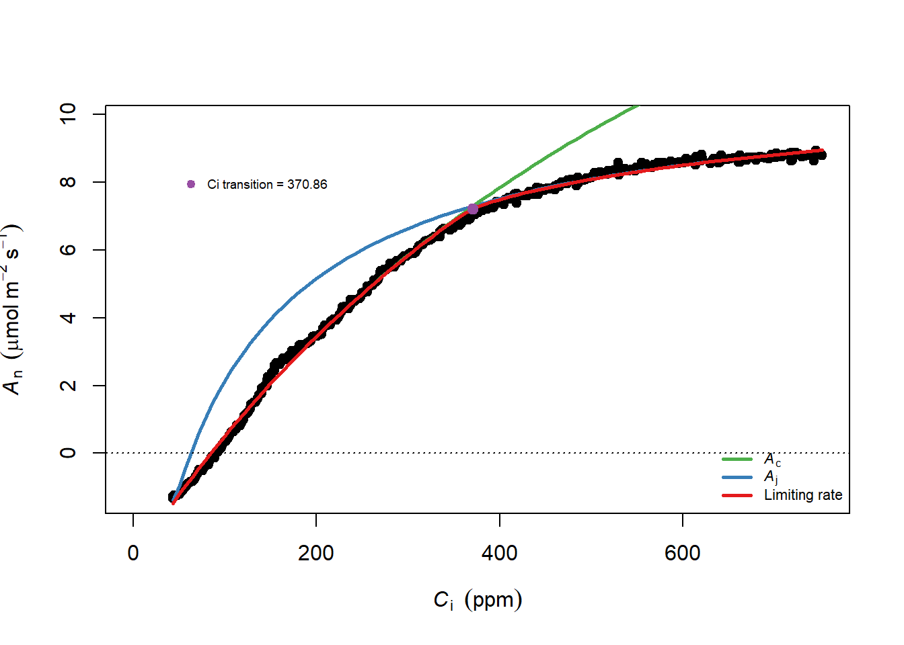

Code
library("plantecophys")
dat_aci <- read.csv('data/racir_adyn.csv')
dat1 <- fitaci(
dat_aci,
varnames = list(
ALEAF = "A",
Tleaf = "TleafCnd",
Ci = "Ci",
PPFD = "Qin"
),
alpha = 0.5,
theta = 1
)ACi 曲线 (RACiR)RACiR (小节 1) 曲线已经证明了他的价值 (例如 J. R. Stinziano et al. 2017; Joseph R. Stinziano et al. 2018; Coursolle et al. 2019)，Saathoff and Welles (2021) 介绍了使用 LI-6800 进行几种不同方式的二氧化碳响应曲线的测量，分别是 RACiR，DAT（Dynamic Assimiliation Technique）ACi 曲线与稳态 ACi 曲线（传统方式）。

在结果计算上，三者有一致也存在差异，但很难下结论哪种方式更准确，ACi 曲线测量时经典方式，但它使用的数据点非常少，而 RACiR 和 DAT 测量的快速 ACi 则有着 ‘海量’ 的数据点，在参数估计上有着相当大的优势，但很多不确定性值得进一步研究 (Saathoff and Welles 2021)。我们这里单纯从响应曲线拟合上看一下数据的情况。
plantecophys 来拟合我这里使用一个测量水稻的数据来进行演示，测量方式是使用的 DAT 技术的快速 ACi 曲线，正常情况下使用 plantecophys 分析 LI-6800 数据应该是这样：
library("plantecophys")
dat_aci <- read.csv('data/racir_adyn.csv')
dat1 <- fitaci(
dat_aci,
varnames = list(
ALEAF = "A",
Tleaf = "TleafCnd",
Ci = "Ci",
PPFD = "Qin"
),
alpha = 0.5,
theta = 1
)计算参数为：
dat1$pars| Estimate | Std. Error | |
|---|---|---|
| Vcmax | 26.994837 | 0.1154895 |
| Jmax | 46.638084 | 0.1159879 |
| Rd | 1.380359 | 0.0214664 |
作图查看为：
plot(dat1)
但是 plantecophys 是专用于 LI-6400 的参数，使用 LI-6800 修改参数略微麻烦，我于是将其 fitaci 函数略做修改，使其方便用于 LI-6800 (小节 14.1.2):
dat2 <- plantecophys2::fitaci(
dat_aci,
varnames = list(
ALEAF = "A",
Tleaf = "TleafCnd",
Ci = "Ci",
PPFD = "Qin"
),
alpha = 0.5,
theta = 1
)
Formula: ALEAF ~ acifun_wrap(Ci, PPFD = PPFD, Vcmax = Vcmax, Jmax = Jmax,
Rd = Rd, Tleaf = Tleaf, Patm = Patm, TcorrectVJ = Tcorrect,
alpha = alpha, theta = theta, gmeso = gmeso, EaV = EaV, EdVC = EdVC,
delsC = delsC, EaJ = EaJ, EdVJ = EdVJ, delsJ = delsJ, Km = Km,
GammaStar = GammaStar)
Parameters:
Estimate Std. Error t value Pr(>|t|)
Vcmax 26.99484 0.11549 233.7 <2e-16 ***
Jmax 46.63808 0.11599 402.1 <2e-16 ***
Rd 1.38036 0.02147 64.3 <2e-16 ***
---
Signif. codes: 0 '***' 0.001 '**' 0.01 '*' 0.05 '.' 0.1 ' ' 1
Residual standard error: 0.1347 on 295 degrees of freedom
Number of iterations to convergence: 6
Achieved convergence tolerance: 7.337e-06我们看一下结果：
dat2$pars| Estimate | Std. Error | |
|---|---|---|
| Vcmax | 26.994837 | 0.1154895 |
| Jmax | 46.638084 | 0.1159879 |
| Rd | 1.380359 | 0.0214664 |
作图结果为：
plot(dat2)
主要区别是我让 plantecophys2 显示 summary 结果，这样对拟合效果的查看比较直观，再者稍微将图形的显示进行了修改，我感觉更符合我的审美一些。本质上没做改动，只是方便查看拟合结果和图形进行了微调。
下面 photosynthesis 的代码，在我运行拟合过程中长时间不结束，估计是数据量大之后在某个算法上进行反复尝试的原因，为了避免卡在此处，下面的代码并没有运行结束。后面再进行测试 2022-01-25
这里不再做过多介绍，具体细节可以参考 @#sec-photosynthesis-aci：
library(photosynthesis)
dat_aci$TLEAF <-dat_aci$TleafCnd + 273.15
fit <- fit_aci_response(dat_aci,
varnames = list(
A_net = "A",
T_leaf = "TLEAF",
C_i = "Ci",
PPFD = "Qin"
))拟合结果：
reshape2::melt(fit[[1]])使用相同的方式查看图形：
fit[[2]]本质上是使用的参数是 LI-6800 还是 LI-6400 得问题，使用 RACiR 还是 DAT，只是增加了拟合的数据量，无路如何，拟合点数量级的增长对拟合是有利无害的 小节 1.1.1。